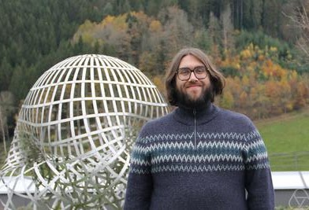

I’m a mathematician and computer scientist working in the field of (mathematical) logic, with a focus on proof theory, pure and applied. In particular, I am interested in Gödel's functional interpretation and its applications in different parts of mathematics and computer science. In the past, I have also been interested in modal logics, many-valued logics and intermediate logics and the resulting combination thereof as well as structural proof theory.
I am a Lecturer (equivalent to Assistant Professor) in the Department of Computer Science at the University of Bath, and a member of the Mathematical Foundations of Computation Group.

Picture credit: Oberwolfach Photo Collection
Before that, I was a post-doctoral researcher in the Logic Group within the Department of Mathematics at TU Darmstadt. I obtained my PhD (Dr.rer.nat.) from the same department with a thesis written under the supervision of Ulrich Kohlenbach.
Email: pischkenicholas [at] gmail [dot] com / nnp39 [at] bath [dot] ac [dot] uk
A proof mining bibliography: alphabetical and chronological
Things of Interest:
The Association for Symbolic Logic has awarded me the Sacks prize for the most outstanding doctoral dissertation in mathematical logic of 2024! You can read about it here (and here). The other winner is Erfan Khaniki who, among many other things, proved the amazing result that not all Kripke models of HA are locally PA!
Note that the PDF link provides you with a newer version than the ArXiv link.
*cricket noises*
{kind=link}